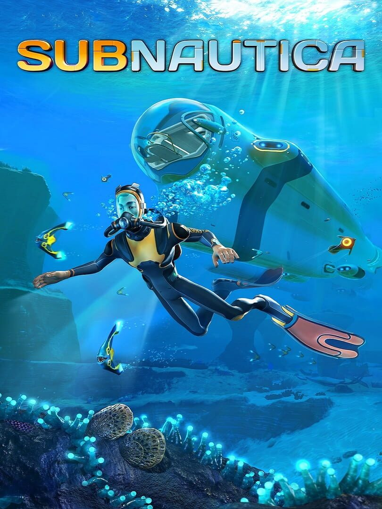

Subnautica
Subnautica
Detalhes
 |
|
| Tempo de jogo | Não Jogado |
| Última Atividade | Nunca |
| Adicionado | 07/06/2026 0:35:52 |
| Modificado | 07/06/2026 0:40:39 |
| Status de Conclusão | Not Played |
| Biblioteca | Steam |
| Fonte | Steam Family Sharing |
| Plataforma | PC (Windows) |
| Data de Lançamento | 23/01/2018 |
| Pontuação da Comunidade | 83 |
| Avaliação da crítica | 84 |
| Pontuação do Usuário | |
| Gênero | Adventure Indie |
| Desenvolvedor | Unknown Worlds |
| Editor | Gearbox Publishing Unknown Worlds |
| Funções | Single Player |
| Links | Facebook Steam Wikipedia Official Website Epic YouTube Twitch Discord Subreddit Community Wiki Bluesky Google Play App Store (iPhone) Xbox Playstation Nintendo |
| Tag | |
Descrição
Subnautica is an underwater adventure game set on an alien ocean planet. A massive, open world full of wonder and peril awaits you!

You have crash-landed on an alien ocean world, and the only way to go is down. Subnautica's oceans range from sun drenched shallow coral reefs to treacherous deep-sea trenches, lava fields, and bio-luminescent underwater rivers. Manage your oxygen supply as you explore kelp forests, plateaus, reefs, and winding cave systems. The water teems with life: Some of it helpful, much of it harmful.

After crash landing in your Life Pod, the clock is ticking to find water, food, and to develop the equipment you need to explore. Collect resources from the ocean around you. Craft diving gear, lights, habitat modules, and submersibles. Venture deeper and further form to find rarer resources, allowing you to craft more advanced items.

Build bases on the sea floor. Choose layouts and components, and manage hull-integrity as depth and pressure increase. Use your base to store resources, park vehicles, and replenish oxygen supplies as you explore the vast ocean.

What happened to this planet? Signs abound that something is not right. What caused you to crash? What is infecting the sea life? Who built the mysterious structures scattered around the ocean? Can you find a way to make it off the planet alive?

The ocean teems with life: Use the ecosystem to help you. Lure and distract a threatening creature with a fresh fish, or simply swim as fast as you can to avoid gnashing jaws of roaming predators.

Build a Pressure Re-Active Waterproof Nanosuit, or PRAWN Suit, and explore extreme depth and heat. Modify the suit with mining drills, torpedo launchers, propulsion cannons, grappling hooks and more.

As the sun goes down, the predators come out. The ocean is unforgiving of those caught unprepared in the darkness. Areas that are safe to explore during the day become treacherous at night, but also reveal a beauty that those who hide from the darkness will never see.

Cave systems wind below the sea bed, from dark claustrophobic passages to caverns lit by bio-luminescent life and burning-hot lava flows. Explore the world below the ocean floor, but watch your oxygen levels, and take care to avoid the threats lurking in the darkness.

Subnautica is being created by Unknown Worlds, a small studio founded by Charlie Cleveland and Max McGuire that traces its roots back to the 2003 Half-Life mod Natural Selection. The team is scattered around the globe, from the United States to the United Kingdom, France, the Czech Republic, Russia, Thailand, Australia, and many more places. There is a central office in San Francisco, California that serves as home base for the whole team.

This game contains flashing lights that may make it unsuitable for people with photosensitive epilepsy or other photosensitive conditions. Player discretion is advised.
Dive Into a Vast Underwater World
You have crash-landed on an alien ocean world, and the only way to go is down. Subnautica's oceans range from sun drenched shallow coral reefs to treacherous deep-sea trenches, lava fields, and bio-luminescent underwater rivers. Manage your oxygen supply as you explore kelp forests, plateaus, reefs, and winding cave systems. The water teems with life: Some of it helpful, much of it harmful.
Scavenge, Craft, and Survive
After crash landing in your Life Pod, the clock is ticking to find water, food, and to develop the equipment you need to explore. Collect resources from the ocean around you. Craft diving gear, lights, habitat modules, and submersibles. Venture deeper and further form to find rarer resources, allowing you to craft more advanced items.
Construct Underwater Habitats
Build bases on the sea floor. Choose layouts and components, and manage hull-integrity as depth and pressure increase. Use your base to store resources, park vehicles, and replenish oxygen supplies as you explore the vast ocean.
Unravel the Mystery
What happened to this planet? Signs abound that something is not right. What caused you to crash? What is infecting the sea life? Who built the mysterious structures scattered around the ocean? Can you find a way to make it off the planet alive?
Disrupt the Food Chain
The ocean teems with life: Use the ecosystem to help you. Lure and distract a threatening creature with a fresh fish, or simply swim as fast as you can to avoid gnashing jaws of roaming predators.
Handle the Pressure
Build a Pressure Re-Active Waterproof Nanosuit, or PRAWN Suit, and explore extreme depth and heat. Modify the suit with mining drills, torpedo launchers, propulsion cannons, grappling hooks and more.
Fear the Night
As the sun goes down, the predators come out. The ocean is unforgiving of those caught unprepared in the darkness. Areas that are safe to explore during the day become treacherous at night, but also reveal a beauty that those who hide from the darkness will never see.
Dive Below the Ocean Floor
Cave systems wind below the sea bed, from dark claustrophobic passages to caverns lit by bio-luminescent life and burning-hot lava flows. Explore the world below the ocean floor, but watch your oxygen levels, and take care to avoid the threats lurking in the darkness.
About the Development Team
Subnautica is being created by Unknown Worlds, a small studio founded by Charlie Cleveland and Max McGuire that traces its roots back to the 2003 Half-Life mod Natural Selection. The team is scattered around the globe, from the United States to the United Kingdom, France, the Czech Republic, Russia, Thailand, Australia, and many more places. There is a central office in San Francisco, California that serves as home base for the whole team.
Warning
This game contains flashing lights that may make it unsuitable for people with photosensitive epilepsy or other photosensitive conditions. Player discretion is advised.